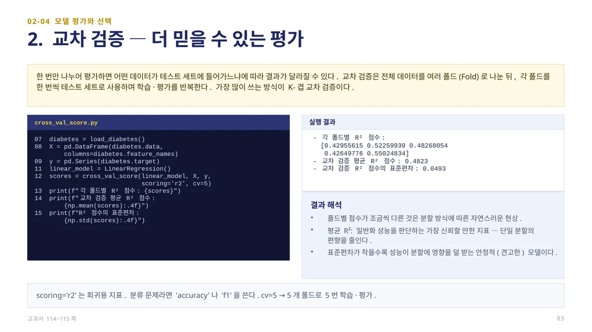
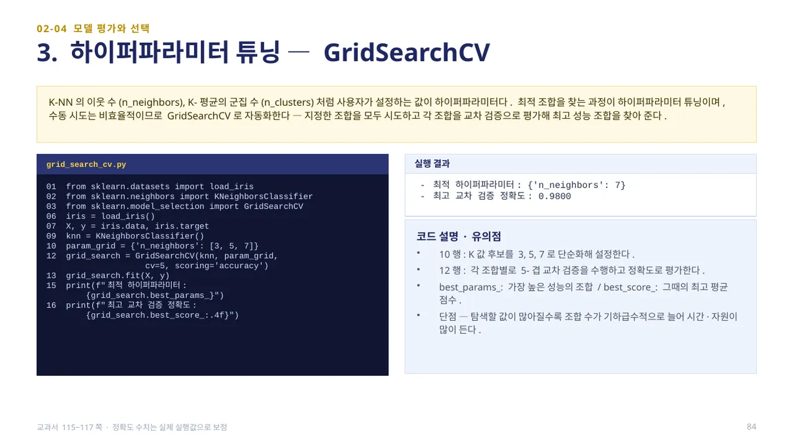
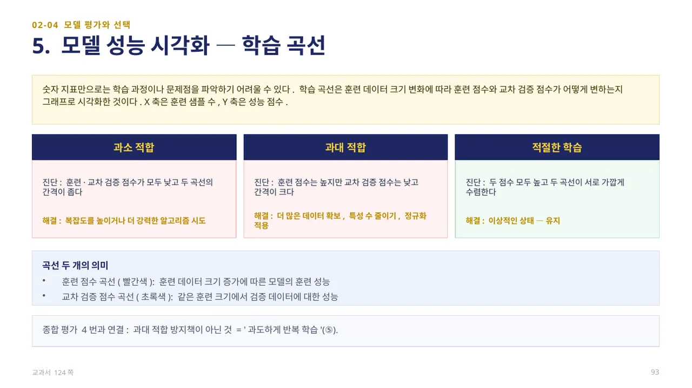
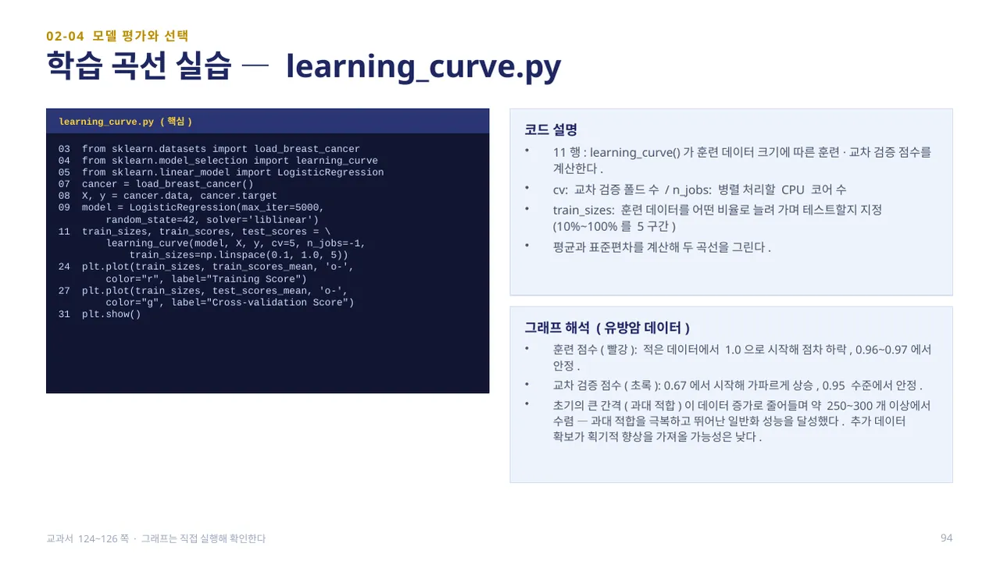
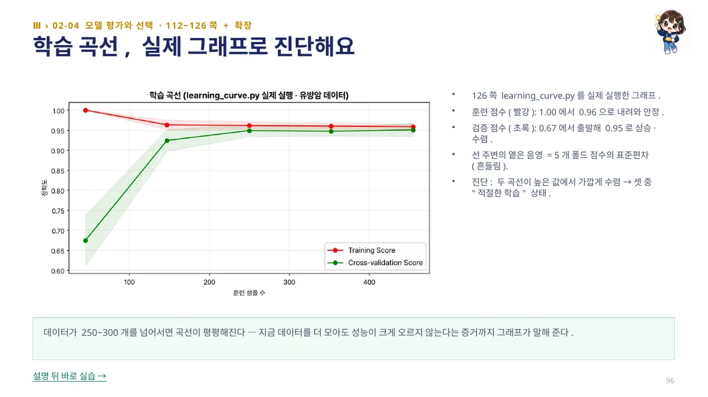
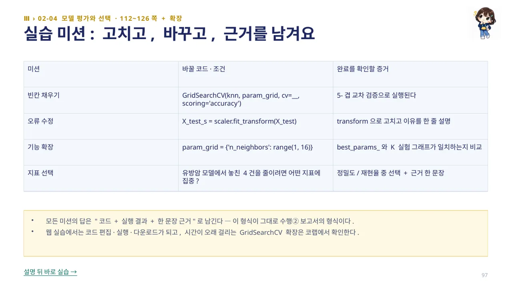
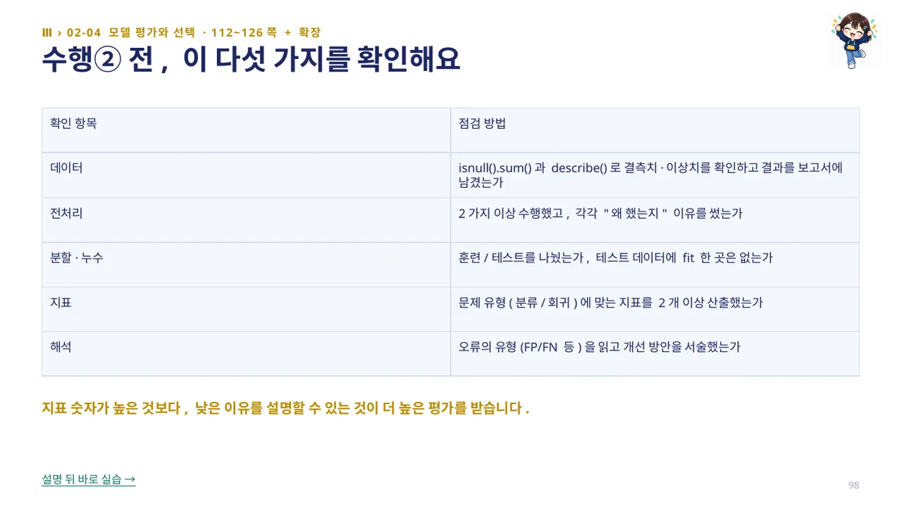

모델 평가는 모델이 얼마나 일반화되었는지 — 학습에 사용되지 않은 새로운 데이터에 대해서도 얼마나 정확하게 예측하는지를 측정하는 과정입니다. 훈련:테스트는 일반적으로 7:3 또는 8:2로 나눕니다.
train_test_split2.py는 당뇨병 데이터로 LinearRegression을 학습시킨 뒤 linear_model.score(X_train, y_train)과 score(X_test, y_test)로 훈련/테스트 R²를 각각 구합니다. 실행 결과 훈련 R² 0.5244(약 52.44% 설명), 테스트 R² 0.4773(약 47.73%)으로 차이가 약 4.71%p입니다. 차이가 작으므로 훈련 데이터에만 지나치게 맞춰진 상태가 아니라 새 데이터에도 일정 수준의 예측 능력을 유지한다고 볼 수 있고, 차이가 크게 벌어지면 과대 적합을 의심합니다. (교과서 112~113쪽)

한 번만 나누어 평가하면 어떤 데이터가 테스트 세트에 들어가느냐에 따라 결과가 달라질 수 있습니다. 교차 검증은 전체 데이터를 여러 폴드(Fold)로 나눈 뒤, 각 폴드를 한 번씩 테스트 세트로 사용하며 학습·평가를 반복합니다. 가장 많이 쓰는 방식이 K-겹 교차 검증입니다.
cross_val_score(linear_model, X, y, scoring='r2', cv=5)는 당뇨병 데이터를 5개 폴드로 나누어 각각 R²를 계산합니다. 실행 결과 5개 폴드 점수는 [0.4296, 0.5226, 0.4827, 0.4265, 0.5502]로 조금씩 다르며, 평균 R²는 0.4823, 표준편차는 0.0493입니다. 평균은 일반화 성능을 판단하는 가장 신뢰할 만한 지표이고, 표준편차가 작을수록 성능이 분할에 영향을 덜 받는 안정적인 모델입니다. scoring='r2'는 회귀용 지표이고, 분류 문제라면 'accuracy'나 'f1'을 씁니다. (교과서 114~115쪽)

K-NN의 이웃 수(n_neighbors), K-평균의 군집 수(n_clusters)처럼 사용자가 설정하는 값이 하이퍼파라미터입니다. 최적 조합을 찾는 과정이 하이퍼파라미터 튜닝이며, 수동 시도는 비효율적이므로 GridSearchCV로 자동화합니다 — 지정한 조합을 모두 시도하고 각 조합을 교차 검증으로 평가해 최고 성능 조합을 찾아 줍니다.
grid_search_cv.py는 붓꽃 데이터에서 param_grid = {'n_neighbors': [3, 5, 7]}로 후보를 정하고, GridSearchCV(knn, param_grid, cv=5, scoring='accuracy')로 각 조합을 5-겹 교차 검증합니다. 실행 결과 best_params_는 {'n_neighbors': 7}, best_score_는 0.9800입니다. K-NN 실습에서 쓴 n_neighbors=5가 최선인지 자동으로 확인하는 것이 이 코드의 목적이지만, 탐색할 값이 많아질수록 조합 수가 기하급수적으로 늘어 시간·자원이 많이 든다는 단점이 있습니다. (교과서 115~117쪽 · 정확도 수치는 실제 실행값 0.9800으로 표기합니다)

숫자 지표만으로는 학습 과정이나 문제점을 파악하기 어려울 수 있습니다. 학습 곡선은 훈련 데이터 크기 변화에 따라 훈련 점수와 교차 검증 점수가 어떻게 변하는지 그래프로 시각화한 것입니다(X축은 훈련 샘플 수, Y축은 성능 점수).
과소 적합은 훈련·검증 점수가 모두 낮고 두 곡선의 간격이 좁을 때로, 복잡도를 높이거나 더 강력한 알고리즘을 시도합니다. 과대 적합은 훈련 점수는 높지만 검증 점수는 낮고 간격이 클 때로, 더 많은 데이터 확보·특성 수 줄이기·정규화 적용으로 해결합니다. 적절한 학습은 두 점수 모두 높고 두 곡선이 서로 가깝게 수렴하는 이상적인 상태입니다. (교과서 124쪽)

learning_curve.py는 유방암 데이터로 LogisticRegression을 학습시키며, learning_curve(model, X, y, cv=5, n_jobs=-1, train_sizes=np.linspace(0.1, 1.0, 5))가 훈련 데이터 크기(10%~100%를 5구간)에 따른 훈련·교차 검증 점수를 계산합니다.
훈련 점수(빨강)는 적은 데이터에서 1.0으로 시작해 점차 하락하여 0.96~0.97에서 안정되고, 교차 검증 점수(초록)는 0.67에서 시작해 가파르게 상승해 0.95 수준에서 안정됩니다. 초기의 큰 간격(과대 적합 신호)이 데이터가 늘면서 줄어들며, 약 250~300개 이상에서 두 곡선이 수렴합니다 — 과대 적합을 극복하고 뛰어난 일반화 성능을 달성했다는 뜻이며, 추가 데이터 확보가 획기적인 향상을 가져올 가능성은 낮습니다. (교과서 124~126쪽)

126쪽 learning_curve.py를 실제 실행한 그래프입니다. 훈련 점수(빨강)는 1.00에서 0.96으로 내려와 안정되고, 검증 점수(초록)는 0.67에서 출발해 0.95로 상승·수렴합니다. 선 주변의 옅은 음영은 5개 폴드 점수의 표준편차(흔들림)를 나타냅니다.
두 곡선이 높은 값에서 가깝게 수렴하므로 앞서 배운 세 가지 상태(과소/과대/적절) 중 ‘적절한 학습’ 상태로 진단합니다. 데이터가 250~300개를 넘어서면 곡선이 평평해지는데, 이는 지금 데이터를 더 모아도 성능이 크게 오르지 않는다는 증거입니다.

지금까지 배운 내용을 코드를 고치고 조건을 바꾸며 확인해 봅니다. 예를 들어 GridSearchCV(knn, param_grid, cv=__, scoring='accuracy')의 빈칸을 채우면 5-겹 교차 검증으로 실행되고, X_test_s = scaler.fit_transform(X_test)의 오류를 transform으로 고치면 데이터 누수를 막을 수 있습니다.
param_grid = {'n_neighbors': range(1, 16)}처럼 후보를 넓혀 best_params_가 앞서 본 K 실험 그래프와 일치하는지 비교해 보고, 유방암 모델에서 놓친 4건을 줄이려면 정밀도·재현율 중 어느 지표에 집중해야 하는지 근거를 한 문장으로 답해 봅니다. 모든 답은 코드 + 실행 결과 + 한 문장 근거로 남기는데, 이 형식이 그대로 수행② 보고서의 형식입니다.

수행② 제출 전에 다섯 가지를 스스로 확인합니다 — 데이터: isnull().sum()과 describe()로 결측치·이상치를 확인하고 보고서에 남겼는가. 전처리: 2가지 이상 수행했고 각각 이유를 썼는가. 분할·누수: 훈련/테스트를 나눴는가, 테스트 데이터에 fit한 곳은 없는가.
지표: 문제 유형(분류/회귀)에 맞는 지표를 2개 이상 산출했는가. 해석: 오류의 유형(FP/FN 등)을 읽고 개선 방안을 서술했는가. 지표 숫자가 높은 것보다, 낮은 이유를 설명할 수 있는 것이 더 높은 평가를 받습니다.
 인공지능 파이썬 실무
인공지능 파이썬 실무